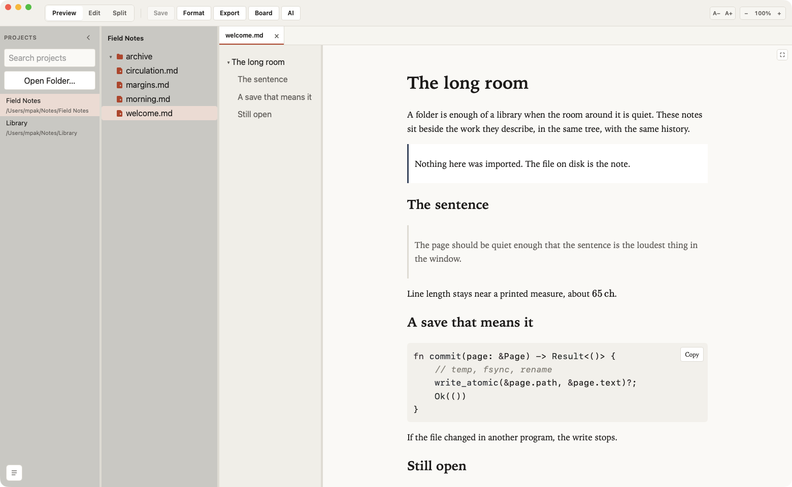
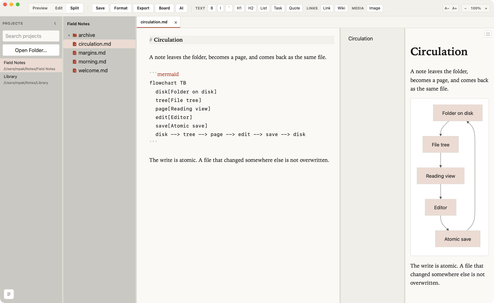
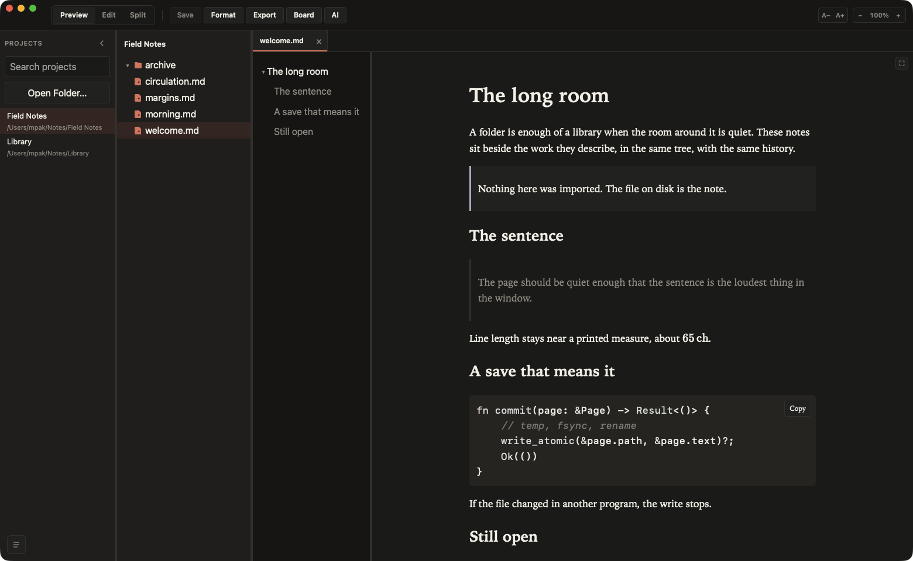

Free · Open source · macOS, Linux, and Windows
Your Markdown.
Your folders.
A quieter way to work with the files you already have. Read, edit, and export from ordinary folders. No vault, no account, no cloud library.
macOS 12 or newer · Linux .deb · Windows installer

Any folder
Projects are paths on disk. Removing one from the list does not delete it.
Atomic saves
A file you did not edit comes back byte for byte. A file changed elsewhere is not overwritten.
Diagrams and math
Mermaid and KaTeX render locally, with the rest of GitHub Flavored Markdown.
Local agents
Codex, Claude, or OpenCode, if they are already on this machine. The app does not send your notes away.
- ⌘P Quick open
- ⌘⇧F Search files
- ⌘F Find
- ⌘E Preview or edit
- ⌘⇧E Split
- ⌘S Save
- ⌘⌥E Export PDF
01
Write beside the page
Preview, Edit, and Split share one window. The source stays readable — headings, links, and fenced code — while the page beside it updates as you type and keeps the place you were reading. Choosing a heading in the contents list scrolls the page and the source together. Formatting lives in the toolbar, and in the shortcuts you already use.

02
The room, as it works now
Folders, reading, and writing, with search, tasks, images, and a contents panel you can put away.
-
Reading
Tables, footnotes, alerts, wiki links, and YAML front matter. A task line is a checkbox in Preview. Click it and the file becomes
[x]or[ ]. -
Links
A link to another file opens a new tab, at the heading when the link has one. That document is still where you left it when you come back. A web address opens in the browser.
-
Contents
A button in the preview corner shows or hides the outline. Pressed in, the list is visible. The choice is saved. In Split, choosing a heading scrolls the page and the source. Full size fills the window under the title bar.
-
Unsaved files
A red dot at the top-left of a file icon means the editor has changes. Saving removes the dot. Renaming the file keeps that text.
-
Search and tabs
Quick open jumps to a name. Search in files takes plain text or a regular expression, and a plain query also finds a close path. Each tab remembers Preview, Edit, or Split and comes back at the next launch. A single click is a temporary tab; a double-click pins it.
-
The tree
New file, new folder, rename, duplicate, move, and trash. Drag into a folder, or hold Option to copy. Refresh reloads that folder. Reveal opens Finder, Explorer, or the file manager.
-
Pictures and source
PNG, JPEG, GIF, WebP, SVG, and the other common images open in Preview and stay images. Ruby, JavaScript, Elixir, and other source files open in the editor. Code blocks and quotes have Copy. Format aligns Markdown tables and pretty-prints JSON.
-
Diagrams and PDF
Click a Mermaid drawing to move, resize, and zoom it. The window remembers its size and place. KaTeX stays on the page. Export PDF is on macOS.
03
Twelve rooms for the same text
Paper, Solarized, Nord, Gruvbox, Catppuccin, Tokyo Night, and GitHub. Follow the system appearance, or flip light and dark for this session with ⌘⌥T — that choice is not written into your settings. Fonts, reading size, and preview colors live in Settings. A theme file you add is listed with these twelve.
- Paper Light
- Paper Dark
- Solarized Light
- Solarized Dark
- Gruvbox Light
- Gruvbox Dark
- Catppuccin Latte
- Catppuccin Mocha
- Nord
- Tokyo Night
- GitHub Light
- GitHub Dark

04
The folder never leaves
-
No account
Reading, search, themes, and diagrams run on your computer. The only optional network request is Check for Updates.
-
No vault
Open a folder, or drop one on the window. The same files stay available to Git, your file manager, and any other editor.
-
A board for this folder
Dashboard counts projects, Markdown files, and the agents you configured. Those numbers stay on this computer.
-
Agents on your terms
An external agent is a CLI you already installed: Codex, Claude, or OpenCode. It may use the network under its own terms. This app does not ship your Markdown to a model service.
Free, on macOS, Linux, and Windows.
macOS 12 or newer, Apple Silicon and Intel. A Linux .deb for x86_64, and a Windows installer. The macOS build is signed and notarized. PDF export, and installing an update from inside the app, are on macOS.